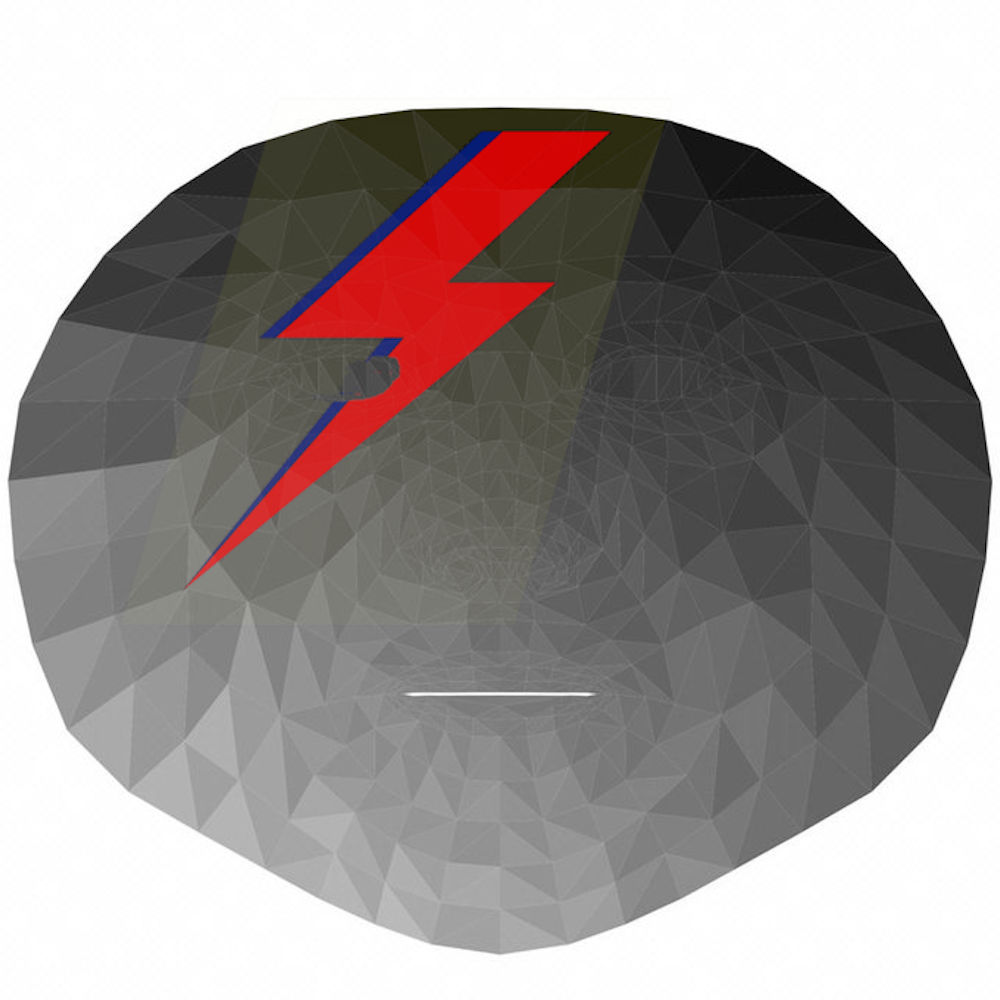
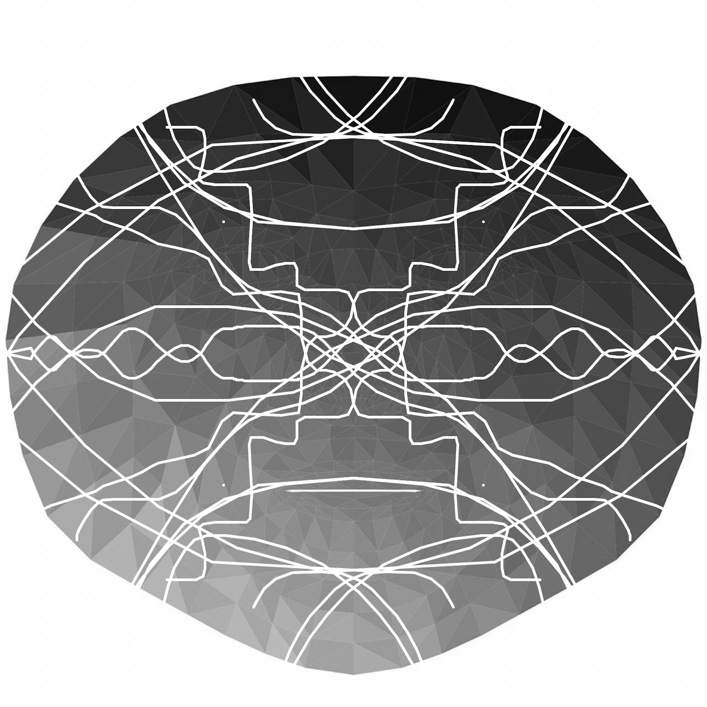
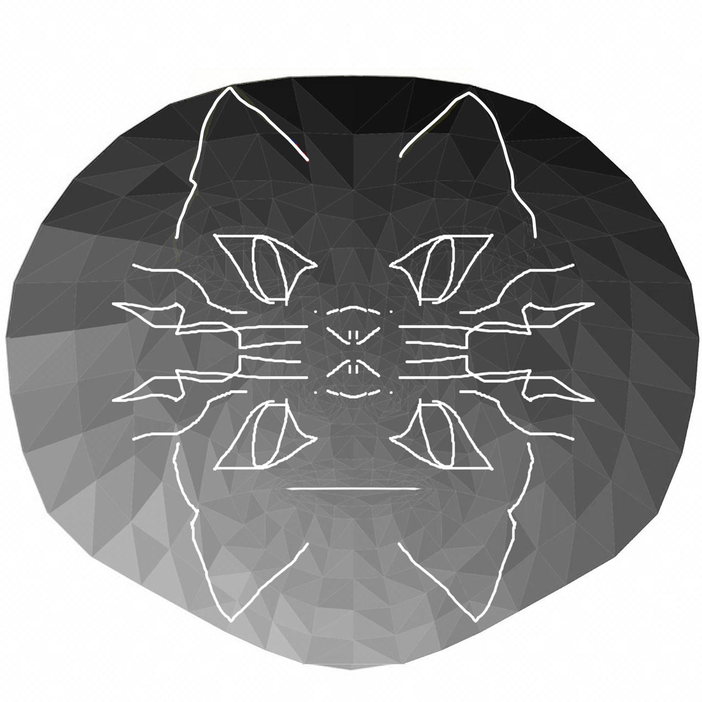
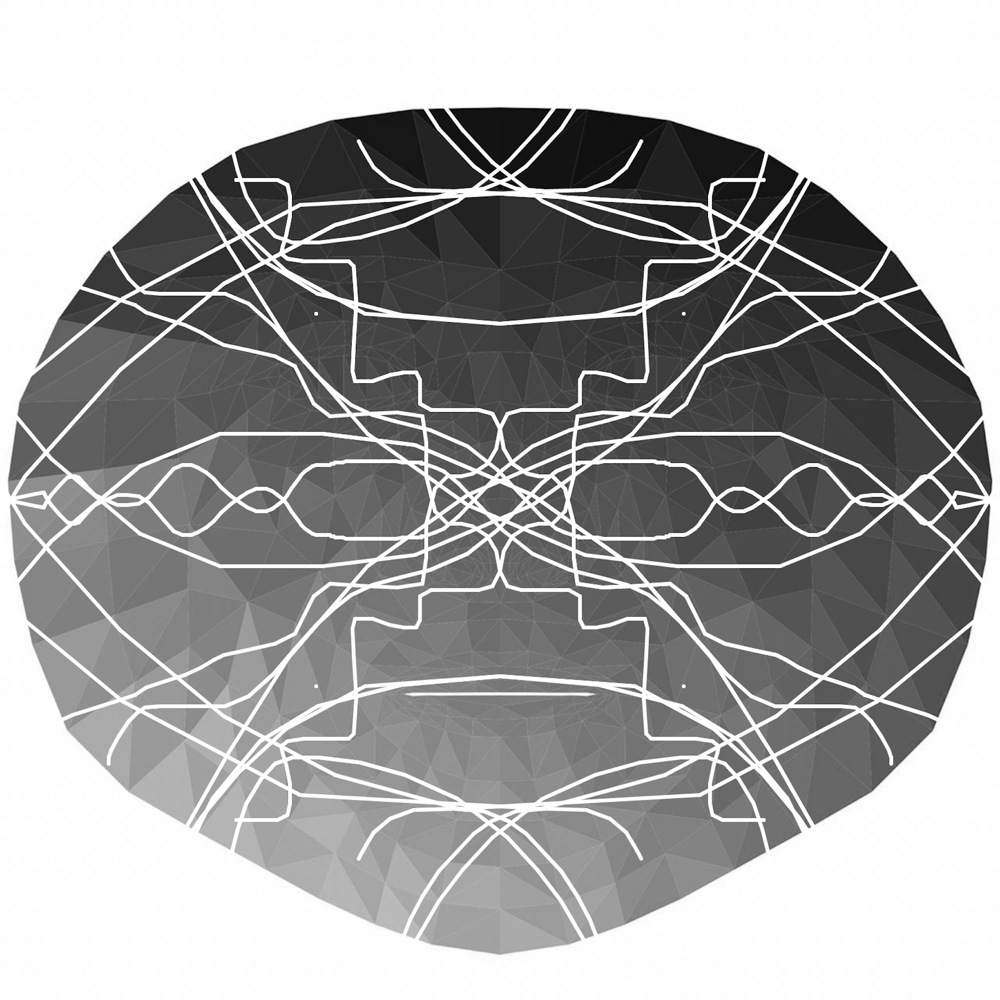
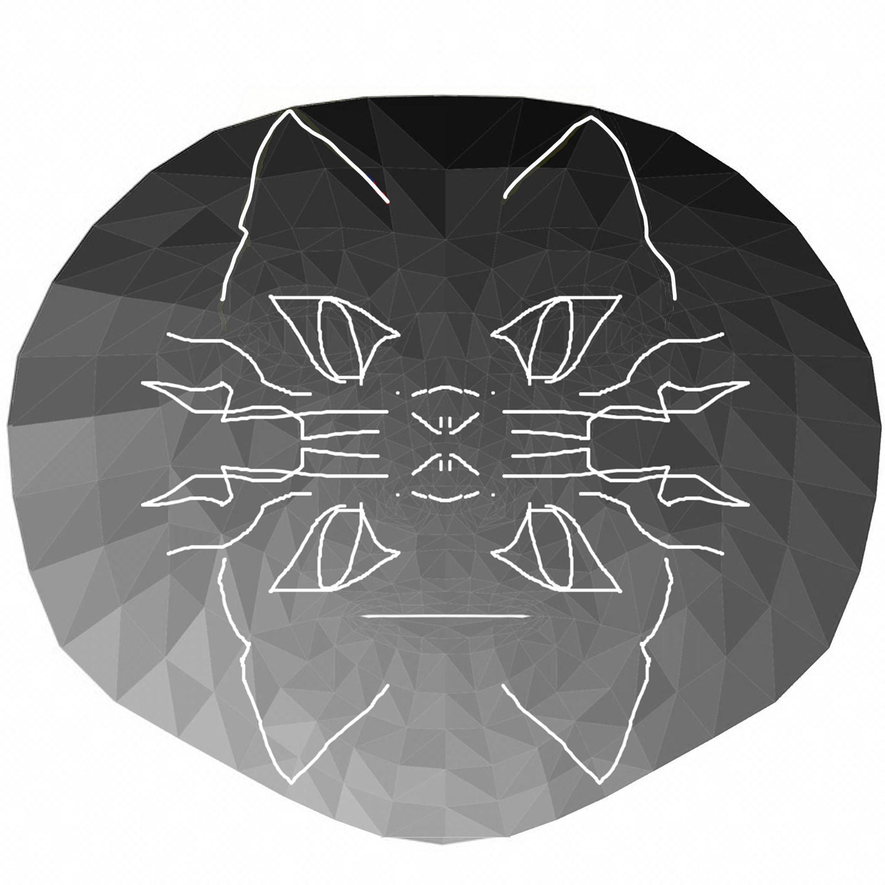
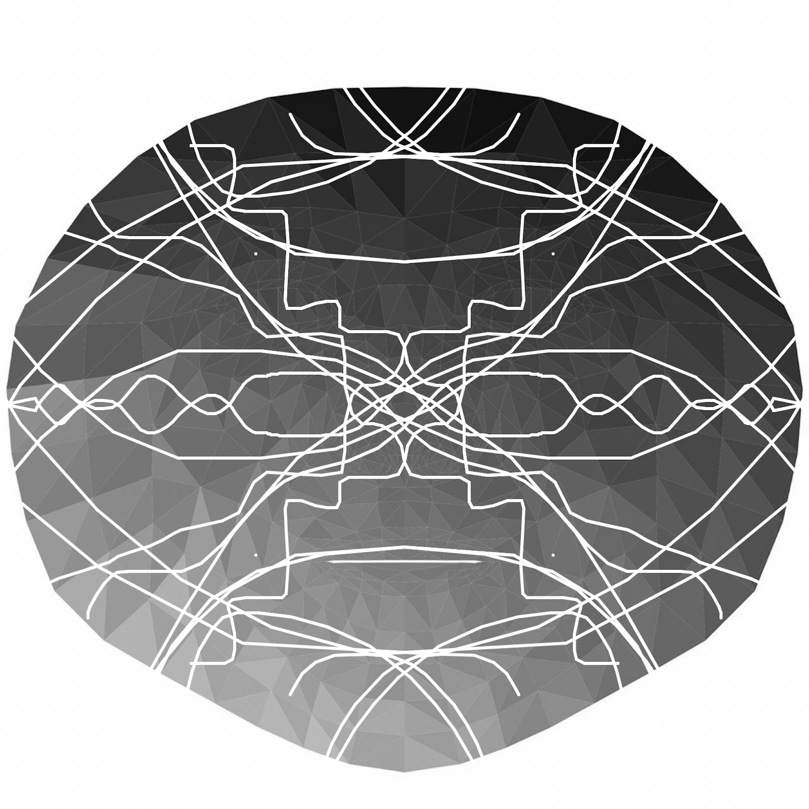
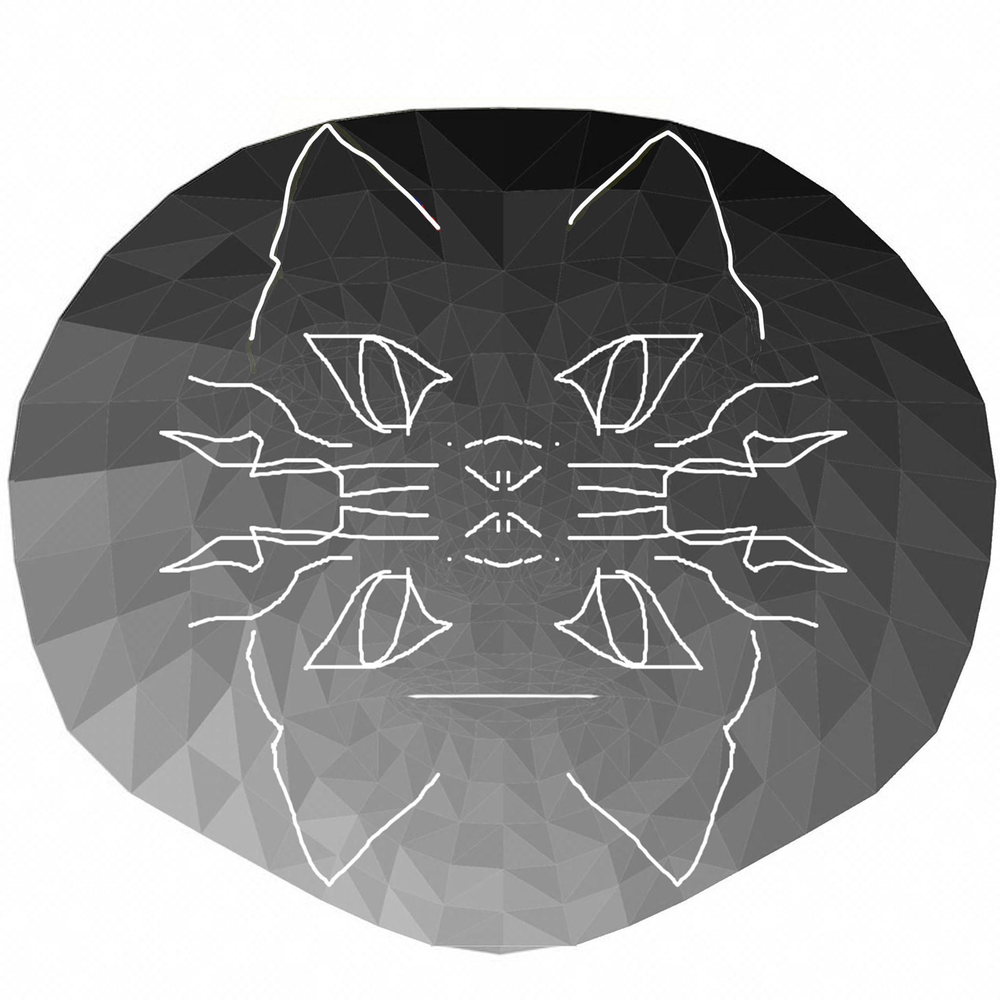

Welcome to Nina's face drawing thing! It takes a few minutes to load so be patient. Submit a drawing atop the template at the bottom of the page to nlutz at mit dot edu if you want to see your drawing here. Refresh the page for a random drawing on top of your face!

 




